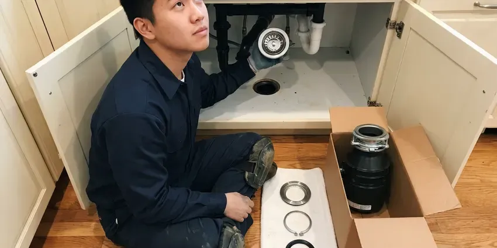

Grease Trap Repair in Tonawanda Town, NY
Is your grease trap failing in Tonawanda Town, NY? HCL Plumbing offers fast, professional repair solutions for both commercial and residential properties.
- Same-Day Commercial Repairs
- Upfront Pricing
- Fast Commercial Service
- Satisfaction Guaranteed

Your Trusted Source for Grease Trap Repair in Tonawanda Town, NY.
Reach out to HCL Plumbing today for a free estimate on your grease trap repair needs.
Your Go-To for Grease Trap Repair in Tonawanda Town, NY
When your grease trap isn't working right, it can lead to serious plumbing issues and steep fines. HCL Plumbing offers prompt and efficient grease trap repair throughout Tonawanda Town, NY, helping you avoid backups and maintain a sanitary environment.
Our expertise includes:
- Lid, gasket and riser repairs on indoor and outdoor units
- Repair or replace damaged interceptor baffles.
- Baffle, inlet tee and outlet tee replacement and repair

Additional Kitchen Plumbing Services in Tonawanda Town, NY
Our kitchen plumbing services in Tonawanda Town, NY cover sinks, disposals, dishwashers, and grease traps so your kitchen keeps running without backups or leaks.



Garbage Disposal Installation in Tonawanda Town


Customers
Why Choose HCL Plumbing for Grease Trap Repair in Tonawanda Town, NY?
We fix the root cause rather than patching symptoms. Every repair is tested with water flow to confirm the trap separates grease the way it should.
- Prevent Backups, Properly functioning grease traps prevent expensive and unsanitary sewer backups in your kitchen and property.
- Quality Parts, We use manufacturer parts or commercial-grade materials built for grease and heat.
- Preventative Focus, Beyond repairs, we offer advice on maintenance schedules to extend the life of your grease trap and prevent future breakdowns.
Citywide Coverage
HCL Plumbing proudly serves every neighborhood and business district across Tonawanda Town. Whether your restaurant is downtown or in the suburbs, our plumbers are always nearby and ready to respond quickly to your grease trap repair needs.
Experienced Team
Our plumbing team consists of licensed and experienced professionals who are experts in commercial kitchen systems, including all types of grease traps. They receive regular training on the latest repair techniques and code updates specific to New York.
Safety-First Approach
Safety is paramount in every grease trap repair we undertake. We adhere strictly to all OSHA guidelines and local Tonawanda Town safety protocols, ensuring the well-being of our technicians, your staff, and your customers during service.
Trusted Certified Tonawanda Town Plumbing Services Professionals
At HCL Plumbing, we take pride in providing licensed, certified plumbing services throughout Tonawanda Town, NY. Backed by leading industry credentials, our experienced plumbers combine technical skill with genuine customer care. Whether it is repair, installation, or maintenance, we follow strict safety and quality standards to deliver long-lasting results you can trust.
Call Us Now PHCC Plumbing Contractor Recognition
PHCC Plumbing Contractor Recognition Better Business Bureau (BBB) Accreditation
Better Business Bureau (BBB) Accreditation Angi Certified Pro
Angi Certified Pro ISO 9001 Quality Management Certification
ISO 9001 Quality Management CertificationReliable Grease Trap Repair Services in Tonawanda Town, NY
Emergency Grease Trap Services in Tonawanda Town, NY
Grease trap failures can happen at the worst possible times, leading to immediate business disruption. HCL Plumbing offers emergency grease trap repair services to address urgent issues like severe backups, overflows, or major leaks. Our quick response team in Tonawanda Town, NY is equipped to quickly diagnose and implement temporary or permanent solutions to minimize downtime and get your commercial kitchen back to operational status as fast as possible, even after hours.

Grease Trap Odor Control & Repair in Tonawanda Town
Persistent foul odors coming from your grease trap are a sign of inefficiency, excessive FOG accumulation, or bacterial growth. Beyond cleaning, our repair services address the root cause, whether it's poor ventilation, sludge buildup, or structural issues preventing proper flow. We ensure all components are working correctly to contain and process waste effectively, eliminating unpleasant smells that can drive away customers in Tonawanda Town.
Grease Trap Repair vs Replacement Cost in Tonawanda Town, NY
Simple repairs like gasket or tee replacements usually cost far less than a new trap. Major damage such as a cracked tank body, failing concrete or a badly corroded steel unit may make replacement the better value. We compare repair cost, remaining life and compliance risk for you. Older steel traps often rust through and are good candidates for upgrade. We give you options and pricing in writing so you can decide.
Damaged Baffle and Lid Repair in Tonawanda Town, NY
The internal baffles of a grease trap are essential for separating FOG from wastewater. If these are damaged or dislodged, the trap becomes inefficient, allowing grease to escape into the sewer system. We repair or replace broken baffles and cracked lids in Tonawanda Town, NY, ensuring your trap functions as designed. A secure lid also prevents odors and keeps pests out, maintaining hygiene around the unit.
Inlet and Outlet Tee Repair in Tonawanda Town, NY
Tees direct flow into and out of the trap at the correct depth. Missing or broken tees allow floating grease to escape into the sewer line. We replace damaged tees with durable PVC or other approved materials. We also check that they are set at the right depth for your unit. This is one of the most common and necessary grease trap repairs.
Hydro-Jetting for Grease Trap Repair in Tonawanda Town
When traditional snaking isn't enough, hydro-jetting is our go-to method for severe grease trap blockages. This powerful technique uses high-pressure water streams to thoroughly scour the interior of pipes and the grease trap itself, removing years of FOG buildup, scale, and debris. It's a highly effective, non-invasive method that not only clears clogs but also cleans the lines, greatly reducing the likelihood of future blockages in your Tonawanda Town business.
Flow Control Device Repair in Tonawanda Town
Hydromechanical traps rely on a flow control fitting to keep water moving at the rated speed. If this fitting is missing or clogged, the trap can be overwhelmed and grease escapes. We inspect, clean or replace flow control devices during repair visits. We also check the air intake that allows the device to work properly. Correct flow control is necessary for a trap to pass inspection.

Commercial Grease Trap Repair in Tonawanda Town
For restaurants, cafeterias, and food service establishments in Tonawanda Town, a functioning grease trap is a must. We offer emergency and scheduled repairs for all commercial grease interceptors, addressing issues like clogged lines, broken baffles, or structural damage. Our team understands the high volume of FOG in commercial settings and provides durable solutions to prevent operational downtime and ensure health code compliance. We work efficiently to minimize disruption to your business.
Grease Trap Repair Near Me in Tonawanda Town, NY
When you search for 'grease trap repair near me,' you want a local expert who understands the plumbing codes and environmental regulations of Tonawanda Town, NY. HCL Plumbing is your community's reliable plumbing contractor, providing fast and efficient service to make sure your commercial kitchen operates without interruption.
Our team is stationed throughout Tonawanda Town to offer prompt grease trap repair services wherever your business is located. We are proud to be the local plumbing solution, ready to respond quickly to your needs with the right tools and expertise for any grease trap issue.
HCL Plumbing at a Glance
- Licensed and insured plumbers serving Tonawanda Town, NY
- 24/7 emergency service with same-day scheduling
- Upfront, flat-rate pricing before work begins
- 4.8-star rated by 520+ New York customers
Tonawanda Town Map
Tonawanda Town Information
- Population
- 57,431
- Area codes
- Local
- Service area
- Tonawanda Town and communities within 40 miles
- Nearby
- Buffalo, Cheektowaga, Niagara Falls, Rochester
For homes and businesses in Tonawanda Town, NY, where cooking is central to family life and local cuisine, efficient grease trap function is critical to prevent costly plumbing issues and comply with environmental standards.
Expert Services
Trust our professionals for reliable HCL Plumbing solutions in Tonawanda Town, NY.
Our Specialized Plumbing Services in Tonawanda Town, NY
At HCL Plumbing, we provide a complete range of plumbing services across Tonawanda Town, NY. From leak detection to full system installations, our team ensures fast, precise, and affordable service for both residential and commercial properties. Explore our core services below:


How Our Grease Trap Repair Process Works in Tonawanda Town, NY
Our grease trap repair process focuses on quick diagnosis and lasting fixes.
Request a Quote
Call (716) 396-7101 or fill out our online form to schedule your grease trap repair service. We will gather initial information about your issue and set up a convenient appointment time.
Diagnosis & Inspection
Our certified plumber will arrive on site to thoroughly inspect your grease trap and connected plumbing. We use advanced diagnostic tools to pinpoint the exact cause of the problem, whether it's a clog, leak, or component failure.
Expert Repair
Based on our diagnosis, we will explain the repair options and provide a clear, upfront estimate. Once approved, our team will perform the necessary repairs using high-quality parts and industry-best practices, ensuring a lasting solution.
Frequently Asked Questions About Grease Trap Repair in Tonawanda Town
Minor repairs like gaskets, tees or flow control fittings usually cost $200 to $800. Larger repairs such as baffle rebuilds, riser replacement or lid upgrades can run $1,000 to $3,000 or more. We provide a written estimate before work begins.
While minor clogs might seem DIY-fixable, grease trap repair is generally best left to licensed plumbers. These systems involve complex plumbing, potential health hazards from wastewater, and strict local codes in New York. Improper repairs can lead to greater damage, environmental fines, or health code violations for your business.
Most indoor repairs take a few hours. Outdoor interceptor repairs may take a day or more, especially if pumping, excavation or concrete work is involved.
To prevent future problems, implement strict FOG management practices, including scraping plates into the trash before washing, regularly cleaning your grease trap (typically every 1 to 3 months depending on usage), and avoiding pouring grease down drains. Regular professional maintenance from HCL Plumbing can also greatly extend the life and efficiency of your system.
The main cause is the accumulation of FOG (Fats, Oils, and Greases) which solidifies and creates blockages. Other causes include structural damage from age or impact, corrosion of internal components, improper installation, or lack of regular maintenance and cleaning.
Minor repairs usually do not, but major structural repairs or replacements may require a permit and inspection. We let you know before starting work.
Yes, we repair Zurn, Watts, Schier, Endura, Thermaco and other common brands. We also repair concrete gravity interceptor tanks.
Many problems such as broken tees, worn gaskets and damaged lids can be repaired. Cracked tank bodies or badly corroded units typically need replacement.
What People Are Saying About Our Plumbing Experts?

James P.
Our commercial plumbing system had a leak under the sink, and HCL Plumbing handled it professionally. The plumbers arrived quickly and restored everything without disruption to our customers.
Commercial Plumbing · Rochester, NYRobert G.
The trenchless sewer replacement saved our front yard. They walked us through the camera inspection footage first so we knew exactly what we were paying for.
Sewer Line Replacement · Tonawanda Town, NY
Laura S.
I scheduled a water heater replacement, and the team made the process smooth and affordable. The new unit works perfectly, and they cleaned up after completing the job.
Water Heater Replacement · Buffalo, NY
Emily R.
I called HCL Plumbing for plumbing repair, and the technician was fast, polite, and thorough. They explained the problem clearly and fixed it the same day. I will definitely hire them again. Highly recommended!
Plumbing Repair · Niagara Falls, NY
Daniel K.
A pipe burst at 11 pm and they actually answered. The plumber showed up within the hour, shut everything down, and had us back to normal the next morning. Could not ask for more.
Emergency Plumbing · Niagara Falls, NYSofia M.
Two new toilets installed in one visit, no mess left behind, and the tech even adjusted a faucet he noticed was dripping. Fair pricing and really friendly.
Toilet Installation · Niagara Falls, NY